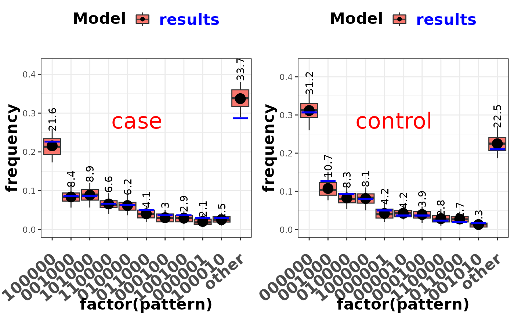

Posterior predictive checking for the nested partially class models - frequent patterns in the BrS data. (for multiple folders)
Source:R/plot-model-check.R
plot_check_common_pattern.RdAt each MCMC iteration, we generate a new data set based on the model and parameter values at that iteration. The sample size of the new data set equals that of the actual data set, i.e. the same number of cases and controls.
Value
A figure of posterior predicted frequencies compared with the observed frequencies of the most common patterns for the BrS data.
See also
Other visualization functions:
plot.nplcm(),
plot_BrS_panel(),
plot_SS_panel(),
plot_check_pairwise_SLORD(),
plot_etiology_regression(),
plot_etiology_strat(),
plot_panels(),
plot_pie_panel(),
plot_subwt_regression()
Examples
# \donttest{
data(data_nplcm_noreg)
cause_list <- LETTERS[1:6]
J.BrS <- 6
model_options_no_reg <- list(
likelihood = list(
cause_list = cause_list,
k_subclass = 2,
Eti_formula = ~-1, # no covariate for the etiology regression
FPR_formula = list(
MBS1 = ~-1) # no covariate for the subclass weight regression
),
use_measurements = c("BrS"),
# use bronze-standard data only for model estimation.
prior= list(
Eti_prior = overall_uniform(1,cause_list),
# Dirichlet(1,...,1) prior for the etiology.
TPR_prior = list(BrS = list(
info = "informative", # informative prior for TPRs
input = "match_range",
# specify the informative prior for TPRs by specifying a plausible range.
val = list(MBS1 = list(up = list(rep(0.99,J.BrS)),
# upper ranges: matched to 97.5% quantile of a Beta prior
low = list(rep(0.55,J.BrS))))
# lower ranges: matched to 2.5% quantile of a Beta prior
)
)
)
)
set.seed(1)
run_example <- function(){
# include stratification information in file name:
thedir0 <- paste0(tempdir(),"_no_reg")
# create folders to store the model results
dir.create(thedir0, showWarnings = FALSE)
on.exit(unlink(thedir0, recursive = TRUE), add = TRUE)
result_folder_no_reg <- file.path(thedir0,paste("results",collapse="_"))
thedir <- result_folder_no_reg
dir.create(thedir, showWarnings = FALSE)
# options for MCMC chains:
mcmc_options_no_reg <- list(
debugstatus = TRUE,
n.chains = 1,
n.itermcmc = as.integer(200),
n.burnin = as.integer(100),
n.thin = 1,
individual.pred = FALSE,
ppd = TRUE,
result.folder = thedir,
bugsmodel.dir = thedir
)
BrS_object_1 <- make_meas_object(patho = LETTERS[1:6],
specimen = "MBS", test = "1",
quality = "BrS", cause_list = cause_list)
clean_options <- list(BrS_objects = make_list(BrS_object_1))
# place the nplcm data and cleaning options into the results folder
dput(data_nplcm_noreg,file.path(thedir,"data_nplcm.txt"))
dput(clean_options, file.path(thedir, "data_clean_options.txt"))
rjags::load.module("glm")
nplcm_noreg <- nplcm(data_nplcm_noreg,model_options_no_reg,mcmc_options_no_reg)
plot_check_common_pattern(nplcm_noreg$DIR_NPLCM)
}
run_example()
#> ==[baker] Results stored in: ==
#> /tmp/RtmpEs5B3L_no_reg/results
#> ==Plotting for model checking: frequent BrS measurements patterns. ==

# }